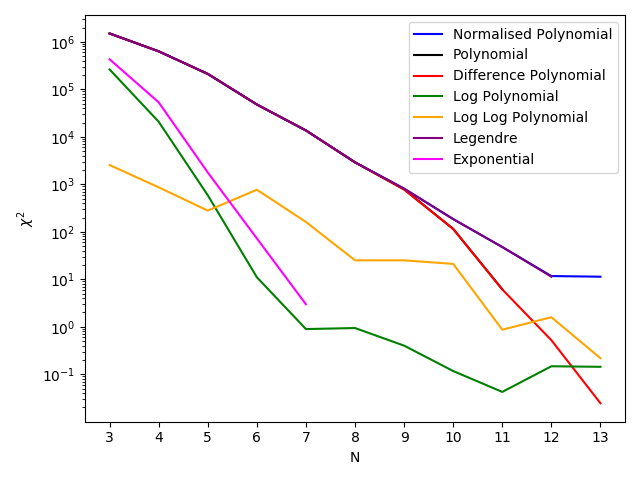
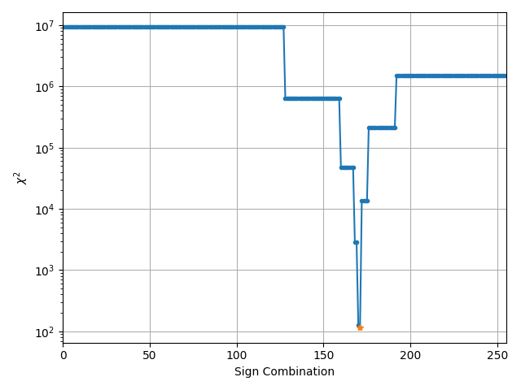
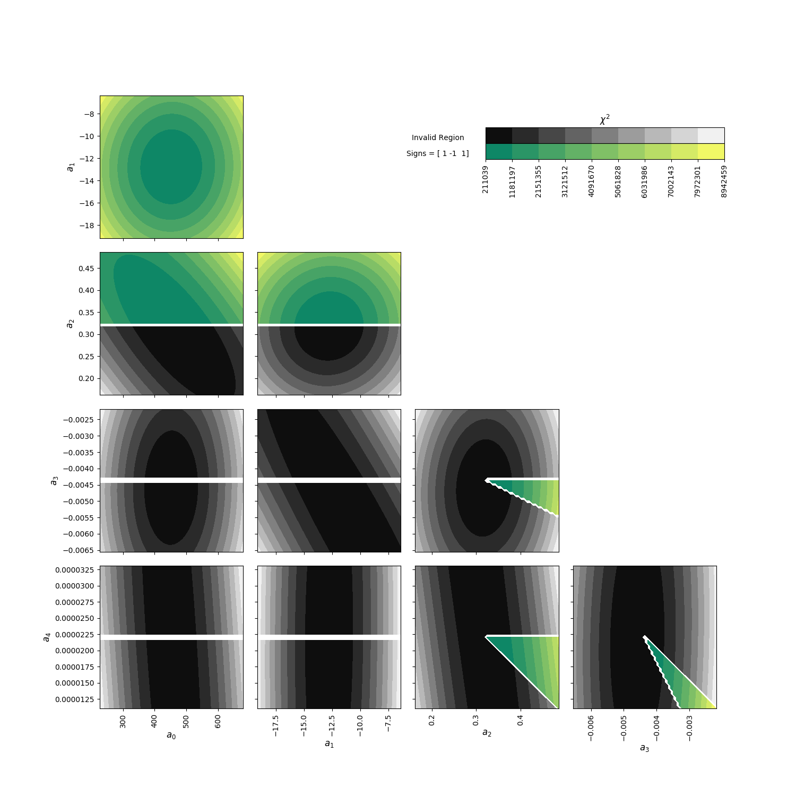

Maxsmooth Example Codes¶
This section is designed to introduce the user to the software and the form in which it is run. It provides basic examples of data fitting with a built in MSF model and a user defined model.
There are also examples of functions that can be used pre-fitting and post-fitting for various purposes including; determination of the best DCF model from the built in library for the problem being fitted, analysis of the \({\chi^2}\) distribution as a function of the discrete sign spaces and analysis of the parameter space surrounding the optimum results.
Simple Example code¶
In order to run the maxsmooth software using the built
in DCF models for a simple fit the user can follow the simple structure detailed here.
The user should begin by importing the smooth class from maxsmooth.DCF.
from maxsmooth.DCF import smooth
The user should then import the data they wish to fit.
import numpy as np
x = np.load('Data/x.npy')
y = np.load('Data/y.npy')
and define the polynomial orders they wish to fit.
N = [3, 4, 5, 6, 7, 8, 9, 10, 11]
for i in range(len(N)):
`act on N[i]`
or for example,
N = 10
smooth can be called like so,
result = smooth(x, y, N, **kwargs)
where the kwargs are detailed below. It's resulting attributes can be accessed by writing
result.attribute_name. For example printing the outputs is done like
so,
print('Objective Funtion Evaluations:\n', result.optimum_chi)
print('RMS:\n', result.rms)
print('Parameters:\n', result.optimum_params)
print('Fitted y:\n', result.y_fit)
print('Sign Combinations:\n', result.optimum_signs)
print('Derivatives:\n', result.derivatives)
New Basis Example¶
This example code illustrates how to define your own basis function for the DCF model. It implements a modified version of the built in normalized polynomial model but the structure is the same for more elaborate models.
As always we need to import the data, define an order \({N}\) and import the function fitting routine, smooth().
import numpy as np
from maxsmooth.DCF import smooth
x = np.load('Data/x.npy')
y = np.load('Data/y.npy')
N=10
There are several requirements needed to define a new basis function completely
for maxsmooth to be able to fit it. They are as summarized below and then
examples of each are given in more detail,
args: Additional non-standard arguments needed in the definition of the basis. The standard arguments are the data (x and y), the order of the fit N, the pivot point about which a model can be fit, the derivative order \({m}\) and the params. While the pivot point is not strictly needed it is a required argument for the functions defining a new basis to help the user in their definition.
basis_functions: This function defines the basis of the DCF model, \({\phi}\) where the model can be generally defined as,
\[y = \sum_{k = 0}^N a_k \phi_k(x)\]where \({a_k}\) are the fit parameters.
model: This is the function described by the equation above.
derivative: This function defines the \({m^{th}}\) order derivative.
derivative_pre: This function defines the prefactors, \({\mathbf{G}}\) on the derivatives where
CVXOPT, the quadratic programming routine used, evaluates the constraints as,\[\mathbf{Ga} \leq \mathbf{h}\]where \({\mathbf{a}}\) is the matrix of parameters and \({\mathbf{h}}\) is the matrix of constraint limits. For more details on this see the
maxsmoothpaper.
We can begin defining our new basis function by defining the additional arguments needed to fit the model as a list,
arguments = [x[-1]*10, y[-1]*10]
The next step is to define the basis functions \({\phi}\). This needs to be done in a function that has the arguments (x, y, pivot_point, N, *args). 'args' is optional but since we need them for this basis we are passing it in.
The basis functions, \({\phi}\), should be an array of dimensions len(x) by N and consequently evaluated at each N and x data point as shown below.
def basis_functions(x, y, pivot_point, N, *args):
phi = np.empty([len(x), N])
for h in range(len(x)):
for i in range(N):
phi[h, i] = args[1]*(x[h]/args[0])**i
return phi
We can define the model that we are fitting in a function like that shown below. This is used for evaluating \({\chi^2}\) and returning the optimum fitted model once the code has finished running. It requires the arguments (x, y, pivot_point, N, params, *args) in that order and again where 'args' is optional. 'params' is the parameters of the fit, \({\mathbf{a}}\) which should have length \({N}\).
The function should return the fitted estimate of y.
def model(x, y, pivot_point, N, params, *args):
y_sum = args[1]*np.sum([
params[i]*(x/args[0])**i
for i in range(N)], axis=0)
return y_sum
Next we have to define a function for the derivatives of the model which takes arguments (m, x, y, N, pivot_point, params, *args) where \({m}\) is the derivative order. The function should return the \({m^{th}}\) order derivative evaluation and is used for checking that the constraints have been met and returning the derivatives of the optimum fit to the user.
def derivative(m, x, y, N, pivot_point, params, *args):
mth_order_derivative = []
for i in range(N):
if i <= m - 1:
mth_order_derivative.append([0]*len(x))
for i in range(N - m):
mth_order_derivative_term = args[1]*np.math.factorial(m+i) / \
np.math.factorial(i) * \
params[int(m)+i]*(x)**i / \
(args[0])**(i + 1)
mth_order_derivative.append(
mth_order_derivative_term)
return mth_order_derivative
Finally we have to define \({\mathbf{G}}\) which is used by CVXOPT to
build the derivatives and constrain the functions. It takes arguments
(m, x, y, N, pivot_point, *args) and should return the prefactor on the
\({m^{th}}\) order derivative. For a more thorough definition of the
prefactor on the derivative and an explanation of how the problem is
constrained in quadratic programming see the maxsmooth paper.
def derivative_pre(m, x, y, N, pivot_point, *args):
mth_order_derivative = []
for i in range(N):
if i <= m - 1:
mth_order_derivative.append([0]*len(x))
for i in range(N - m):
mth_order_derivative_term = args[1]*np.math.factorial(m+i) / \
np.math.factorial(i) * \
(x)**i / \
(args[0])**(i + 1)
mth_order_derivative.append(
mth_order_derivative_term)
return mth_order_derivative
With our functions and additional arguments defined we can pass these
to the maxsmooth smooth() function as is shown below. This overwrites the
built in DCF model but you are still able to modify the fit type i.e. testing all
available sign combinations or sampling them.
result = smooth(x, y, N,
basis_functions=basis_functions, model=model,
derivatives=derivative, der_pres=derivative_pre, args=arguments)
The output of the fit can be accessed as before,
print('Objective Funtion Evaluations:\n', result.optimum_chi)
print('RMS:\n', result.rms)
print('Parameters:\n', result.optimum_params)
print('Fitted y:\n', result.y_fit)
print('Sign Combinations:\n', result.optimum_signs)
print('Derivatives:\n', result.derivatives)
Best Basis Example¶
This function can be used to identify which of the built in DCFs fits the data best before running joint fits.
To use it we begin by loading in the data,
import numpy as np
x = np.load('Data/x.npy')
y = np.load('Data/y.npy')
and then importing the basis_test() function.
from maxsmooth.best_basis import basis_test
To call the function we use,
basis_test(x, y, base_dir='examples/')
The function only requires the data but we can provide it with a base directory, fit type and range of DCF orders to test. By default it uses the sign sampling algorithm and tests \({N = 3 - 13}\). The resultant graph is saved in the base directory and the example generated here is shown below.
{kind=link}
\({\chi^2}\) Distribution Example¶
This example will show you how to generate a plot of the \({\chi^2}\) distribution as a function of the discrete sign combinations on the constrained derivatives.
First you will need to import your data and fit this using maxsmooth as
was done in the simple example code.
import numpy as np
x = np.load('Data/x.npy')
y = np.load('Data/y.npy')
from maxsmooth.DCF import smooth
N = 10
result = smooth(x, y, N, base_dir='examples/',
data_save=True, fit_type='qp')
Here we have used some additional keyword arguments for the 'smooth' fitting
function. 'data_save' ensures that the files containing the tested sign combinations
and the corresponding objective function evaluations exist in the base directory
which we have changed to 'base_dir='examples/''. These files are essential for
the plotting the \({\chi^2}\) distribution and are not saved by maxsmooth
without 'data_save=True'. We have also set the 'fit_type' to 'qp' rather than the
default 'qp-sign_flipping'. This ensures that all of the available sign
combinations are tested rather than a sampled set giving us a full picture of the
distribution when we plot it. We have used the default DCF model to fit this data.
We can import the 'chi_plotter' like so,
from maxsmooth.chidist_plotter import chi_plotter
and produce the fit which gets placed in the base directory with the following code,
chi_plotter(N, base_dir='examples/', fit_type='qp')
We pass the same 'base_dir' as before so that the plotter can find the correct output files. We also give the function the same 'fit_type' used for the fitting which ensures that the files can be read.
The resultant plot is shown below and the yellow star shows the global minimum. This can be used to determine how well the sign sampling approach using a descent and directional exploration can find the global minimum. If the distribution looks like noise then it is unlikely the sign sampling algorithm will consistently find the global minimum. Rather it will likely repeatedly return the local minima found after the descent algorithm and you should use the 'qp' method testing all available sign combinations in any future fits to the data with this DCF model.
{kind=link}
Parameter Plotter Example¶
We can assess the parameter space around the optimum solution
found using maxsmooth with the param_plotter() function.
This can help us identify how well a problem can be solved using the
sign sampling approach employed by maxsmooth or simply
be used to identify correlations between the foreground parameters.
For more details on this see the maxsmooth paper.
We begin by importing and fitting the data as with the chi_plotter() function illustrated above.
import numpy as np
x = np.load('Data/x.npy')
y = np.load('Data/y.npy')
from maxsmooth.DCF import smooth
N = 5
result = smooth(x, y, N, base_dir='examples/', fit_type='qp')
We have changed the order of the fit to 5 to illustrate that for order \({N \leq 5}\) and fits with derivatives \({m \geq 2}\) constrained the function will plot each region of the graph corresponding to different sign functions in a different colourmap. If the constraints are different or the order is greater than 5 then the viable regions will have a single colourmap. Invalid regions are plotted as black shaded colourmaps and the contour lines are contours of \({\chi^2}\).
We can import the function like so,
from maxsmooth.parameter_plotter import param_plotter
and access it using,
param_plotter(result.optimum_params, result.optimum_signs,
x, y, N, base_dir='examples/')
The function takes in the optimum parameters and signs found after the fit as well as the data and order of the fit. There are a number of keyword arguments detailed in the following section and the resultant fit is shown below. The function by default samples the parameter ranges 50% either side of the optimum and calculates 50 samples for each parameter. In each panel the two labelled parameters are varied while the others are maintained at their optimum values.
Maxsmooth Functions¶
This section details the specifics of the built in functions in maxsmooth including
the relevant keyword arguments and default parameters for all. Where keyword arguments
are essential for the functions to run this is stated.
smooth()¶
smooth, as demonstrated in the examples section, is used to call the fitting routine. There are a number of \({^{**}}\) kwargs that can be assigned to the function which change how the fit is performed, the model that is fit and various other attributes. These are detailed below.
-
class
maxsmooth.DCF.smooth(x, y, N, **kwargs)[source]¶ Parameters:
- x: numpy.array
- The x data points for the set being fitted.
- y: numpy.array
- The y data points for fitting.
- N: int
- The number of terms in the DCF.
Kwargs:
- fit_type: Default = 'qp-sign_flipping'
- This kwarg allows the user to switch between sampling the available discrete sign spaces (default) or testing all sign combinations on the derivatives which can be accessed by setting to 'qp'.
- model_type: Default = 'difference_polynomial'
- Allows the user to access default Derivative Constrained Functions built into the software. Available options include the default, 'polynomial', 'normalised_polynomial', 'legendre', 'log_polynomial', 'loglog_polynomial' and 'exponential'. For more details on the functional form of the built in basis see the
maxsmoothpaper.
pivot_point: Default = len(x)//2 otherwise an integer between -len(x) and len(x)
Some of the built in models rely on pivot points in the data sets which by defualt is set as the middle index. This can be altered via this kwarg which can occasionally lead to a better quality fit.- base_dir: Default = 'Fitted_Output/'
- The location of the outputted data from
maxsmooth. This must be a string and end in '/'. If the file does not exist thenmaxsmoothwill create it. By default the only outputted data is a summary of the best fit but additional data can be recorded by setting the keyword argument 'data_save = True'. - data_save: Default = False
- By setting this to True the algorithm will save every tested set of parameters, signs and objective function evaluations into files in base_dir. Theses files will be over written on repeated runs but they are needed to run the 'chidist_plotter'.
- all_output: Default = False
- If set to True this outputs to the terminal every fit performed by the algorithm. By default the only output is the optimal solution once the code is finished.
- cvxopt_maxiter: Default = 10000 else integer
- This shouldn't need changing for most problems however if
CVXOPTfails with a 'maxiters reached' error message this can be increased. Doing so arbitrarily will however increase the run time ofmaxsmooth. - initial_params: Default = None else list of length N
- Allows the user to overwrite the default initial parameters used by
CVXOPT.
constraints: Default = 2 else an integer less than or equal to N - 1
The minimum constrained derivative order which is set by default to 2 for a Maximally Smooth Function.- zero_crossings: Default = None else list of integers
- Allows you to specify if the conditions should be relaxed on any of the derivatives between constraints and the highest order derivative. e.g. a 6th order fit with just a constrained 2nd and 3rd order derivative would have zero_crossings = [4, 5].
- cap: Default = (len(available_signs)//N) + N else an integer
- Determines the maximum number of signs explored either side of the minimum \({\chi^2}\) value found after the decent algorithm has terminated.
- chi_squared_limit: Default = 2 else float or int
- The prefactor on the maximum allowed increase in \({\chi^2}\) during the directional exploration which is defaulted at 2. If this value multiplied by the minimum \({\chi^2}\) value found after the descent algorithm is exceeded then the exploration in one direction is stopped and started in the other. For more details on this and 'cap' see the
maxsmoothpaper.
The following Kwargs can be used by the user to define their own basis function and will overwrite the 'model_type' kwarg.
basis_function: Default = None else function with parameters (x, y, pivot_point, N)
This is a function of basis functions for the quadratic programming. The variable pivot_point is the index at the middle of the datasets x and y by default but can be adjusted.model: Default = None else function with parameters (x, y, pivot_point, N, params)
This is a user defined function describing the model to be fitted to the data.der_pres: Default = None else function with parameters (m, x, y, N, pivot_point)
This function describes the prefactors on the mth order derivative used in defining the constraint.derivatives: Default = None else function with parameters (m, x, y, N, pivot_point, params)
User defined function describing the mth order derivative used to check that conditions are being met.- args: Default = None else list
- Extra arguments for smooth to pass to the functions detailed above.
Output
- .y_fit: numpy.array
- The fitted array of y data from smooth().
- .optimum_chi: float
- The optimum \({\chi^2}\) value for the fit calculated by,\[{X^2=\sum(y-y_{fit})^2}.\]
- .optimum_params: numpy.array
- The set of parameters corresponding to the optimum fit.
- .rms: float
- The rms value of the residuals \({y_{res}=y-y_{fit}}\) calculated by,\[{rms=\sqrt{\frac{\sum(y-y_{fit})^2}{n}}}\]
where \(n\) is the number of data points.
- .derivatives: numpy.array
- The \(m^{th}\) order derivatives.
- .optimum_signs: numpy.array
- The sign combinations corresponding to the optimal result. The nature of the constraint means that a negative
maxsmoothsign implies a positive \({m^{th}}\) order derivative and visa versa.
best_basis()¶
As demonstrated, this function allows you to test the built in basis and their ability to fit the data. It produces a plot that shows \({\chi^2}\) as a function of \({N}\) for the 7 built in models and saves the figure to the base directory.
-
class
maxsmooth.best_basis.basis_test(x, y, **kwargs)[source]¶ Parameters:
- x: numpy.array
- The x data points for the set being fitted.
- y: numpy.array
- The y data points for fitting.
Kwargs:
- fit_type: Default = 'qp-sign_flipping'
- This kwarg allows the user to switch between sampling the available discrete sign spaces (default) or testing all sign combinations on the derivatives which can be accessed by setting to 'qp'.
- base_dir: Default = 'Fitted_Output/'
- The location of the outputted graph from function. This must be a string and end in '/'. If the file does not exist then the function will create it.
N: Default = [3, .., 13] in steps of 1 else list or numpy array of integers
The DCF orders to test each basis function with. In some instances the basis function may fail for a given \({N}\) and higher orders due to overflow/underflow errors orCVXOPTerrors.
chidist_plotter()¶
This function allows the user to produce plots of the \({\chi^2}\)
distribution as a function of the available discrete sign spaces for the
constrained derivatives. This can be used to identify whether or not the
problem is ill defined, see the maxsmooth paper for a definition,
and if it can be solved using the sign sampling approach.
It can also be used to determine whether or not the 'cap' and maximum allowed increase on the value of \({\chi^2}\) during the directional exploration are sufficient to identify the global minimum for the problem.
The function is reliant on the output of the maxsmooth smooth() function.
The required outputs can be saved when running smooth()
using the 'data_save = True' kwarg.
-
class
maxsmooth.chidist_plotter.chi_plotter(N, **kwargs)[source]¶ Parameters:
- N: int
- The number of terms in the DCF.
Kwargs:
- fit_type: Default = 'qp-sign_flipping'
- This kwarg is the same as for the smooth() function. Here it allows the files to be read from the base directory.
- base_dir: Default = 'Fitted_Output/'
- The location of the outputted data from
maxsmooth. This must be a string and end in '/' and must contain the files 'Output_Evaluations/' and 'Output_Signs/' which can be obtained by running smooth() with data_save=True. - chi: Default = None else list or numpy array
- A list of \({\chi^2}\) evaluations. If provided then this is used over outputted data in the base directory. It must have the same length as the ouputted signs in the file 'Output_Signs/' in the base directory. It must also be ordered correctly otherwise the returned graph will not be correct. A correct ordering is one for which each entry in the array corresponds to the correct sign combination in 'Output_Signs/'. Typically this will not be needed but if the \({\chi^2}\) evaluation in 'Output_Evaluations/' in the base directory is not in the desired parameter space this can be useful. For example the built in logarithmic model calculates \({\chi^2}\) in logarithmic space. To plot the distribution in linear space we can calculate \({\chi^2}\) in linear space using a function for the model and the tested parameters which are found in 'Output_Parameters/' in the base directory.
constraints: Default = 2 else an integer less than or equal to N - 1
The minimum constrained derivative order which is set by default to 2 for a Maximally Smooth Function. Used here to determine the number of possible sign combinations available.- zero_crossings: Default = None else list of integers
- Allows you to specify if the conditions should be relaxed on any of the derivatives between constraints and the highest order derivative. e.g. a 6th order fit with just a constrained 2nd and 3rd order derivative would have a zero_crossings = [4, 5]. Again this is used in determining the possible sign combinations available.
- plot_limits: Default = False
- Determines whether the limits on the directional exploration are plotted on top of the \({\chi^2}\) distribution.
- cap: Default = (len(available_signs)//N) + N else an integer
- Determines the maximum number of signs explored either side of the minimum \({\chi^2}\) value found after the decent algorithm has terminated when running smooth(). Here it is used when plot_limits=True.
- chi_squared_limit: Default = 2 else float or int
- The prefactor on the maximum allowed increase in \({\chi^2}\) during the directional exploration which is defaulted at 2. If this value multiplied by the minimum \({\chi^2}\) value found after the descent algorithm is exceeded then the exploration in one direction is stopped and started in the other. For more details on this and 'cap' see the
maxsmoothpaper. Again this is used here when plot_limits=True.
parameter_plotter()¶
This function allows you to plot the parameter space around the optimum
solution found when running maxsmooth and visualise the constraints with
contour lines given by \({\chi^2}\).
-
class
maxsmooth.parameter_plotter.param_plotter(best_params, optimum_signs, x, y, N, **kwargs)[source]¶ Parameters:
- best_params: numpy.array
- The optimum parameters found when running a DCF fit to the data.
- optimum_signs: numpy.array
- The optimum signs for the DCF fit which are used when the derivatives are equal to 0 across the band.
- x: numpy.array
- The x data points.
- y: numpy.array
- The y data points.
- N: int
- The number of terms in the DCF.
Kwargs:
- model_type: Default = 'difference_polynomial'
- The functional form of the model being plotted. If a the user has defined their own basis they can supply this with the Kwargs below and this will be overwritten.
- base_dir: Default = 'Fitted_Output/'
- The location in which the parameter plot is saved.
constraints: Default = 2 else an integer less than or equal to N - 1
The minimum constrained derivative order which is set by default to 2 for a Maximally Smooth Function. Used here to determine the number of possible sign combinations available.- zero_crossings: Default = None else list of integers
- Allows you to specify if the conditions should be relaxed on any of the derivatives between constraints and the highest order derivative. e.g. a 6th order fit with just a constrained 2nd and 3rd order derivative would have an zero_crossings = [4, 5]. Again this is used in determining the possible sign combinations available.
- samples: Default = 50
- The sampling rate across the parameter ranges defined with the optimum solution and width.
- width: Default = 0.5
- The range of each parameter to explore. The default value of 0.5 means that the \({\chi^2}\) values for parameters ranging 50% either side of the optimum result are tested.
- warnings: Default = True
- Used to highlight when a derivative is 0 across the band and that in these instances the optimum signs are assumed for the colourmap if \({N \leq 5}\), constraints=2 and the zero_crossings is empty.
- girdlines: Default = False
- Plots gridlines showing the central value for each parameter in each panel of the plot.
The following Kwargs are used to plot the parameter space for a user defined basis function and will overwrite the 'model_type' kwarg.
basis_function: Default = None else function with parameters (x, y, pivot_point, N)
This is a function of basis functions for the quadratic programming. The variable pivot_point is the index at the middle of the datasets x and y by default but can be adjusted.model: Default = None else function with parameters (x, y, pivot_point, N, params)
This is a user defined function describing the model to be fitted to the data.der_pres: Default = None else function with parameters (m, x, y, N, pivot_point)
This function describes the prefactors on the mth order derivative used in defining the constraint.derivatives: Default = None else function with parameters (m, x, y, N, pivot_point, params)
User defined function describing the mth order derivative used to check that conditions are being met.- args: Default = None else list
- Extra arguments for smooth to pass to the functions detailed above.